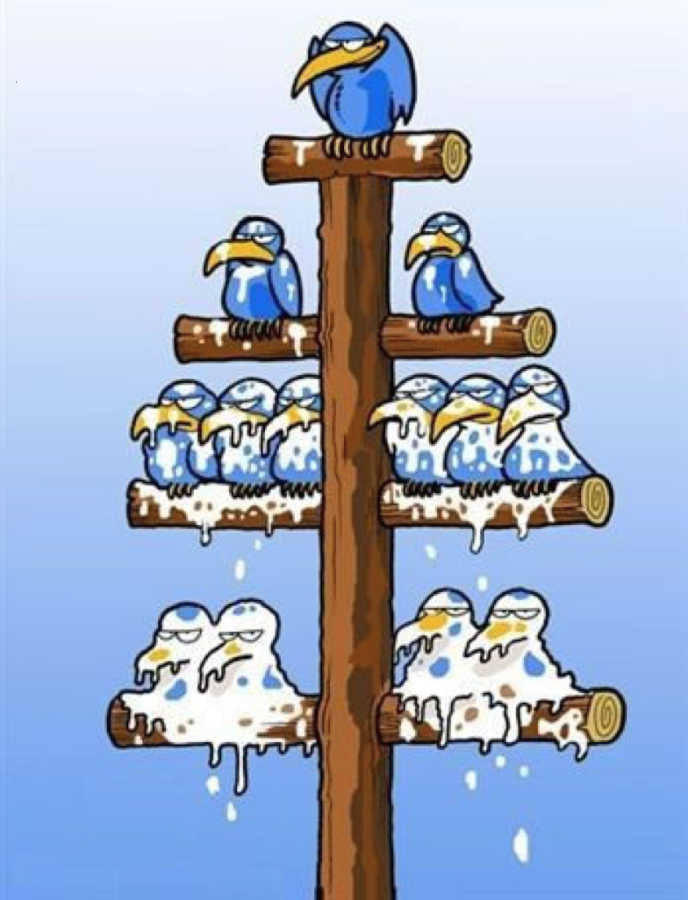

SRE can indeed be "magical" if done properly
It can drastically increase technological readiness and "time to market"
It might even enable you to set binding SLAs in place

It can sometimes feel like leadership is always looking at the new shiny toys and their new shiny terms.
Buying into every new hype cycle leads an organization nowhere in a hurry.
it's great at the beginning but...
if you don’t focus on a small amount of change at once, you will burn out your teams.
You need to have buy-in from all levels.
If you have serious detractors the initiative is doomed to fail

SRE doesn't thrive when handed top-down